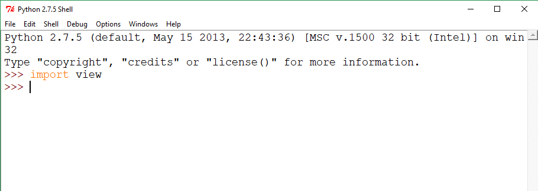

The installation for python can sometimes be a little complex, but if you read and understand carefully, View will be a breeze to install. First, head over to our homepage and press the green download button at the top of the page. This should download a zip file with View and all of the examples. Now you should pay attention closely. Extract the zip folder into a new folder. Go to the build folder and copy view.py to your clipboard. Now navigate to C:\Python27\Lib\site-packages . Paste view.py in that folder. To see whether everything went correctly, open Python IDLE and type import view . If no errors pop up, View was installed successfuly! If anything goes wrong, make sure you put view.py in the correct folder.
Here is a picture of my screen after View is loaded:
In Javascript all you need to do is add view to your HTML code. Download View, paste view.min.js into the place where your program is and
add this to your HTML:
<script src="view.js"></script>
Thats it! you're done!